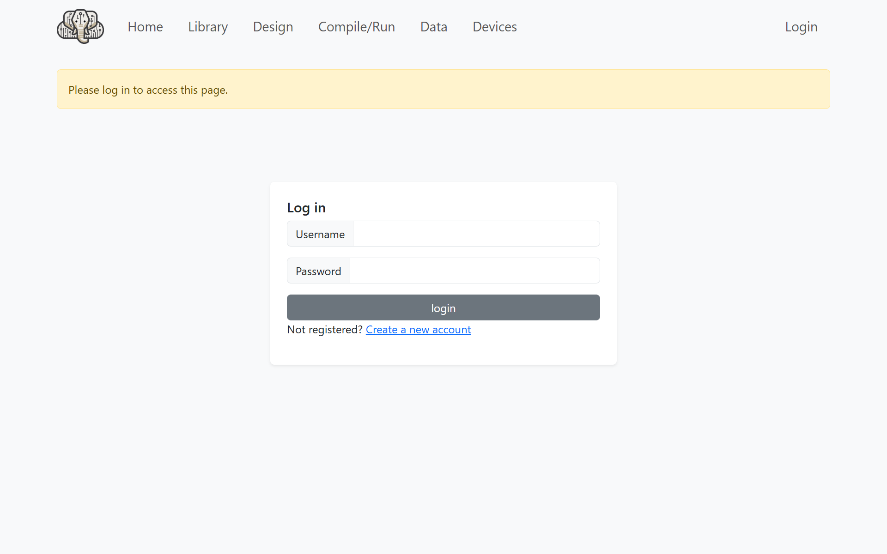
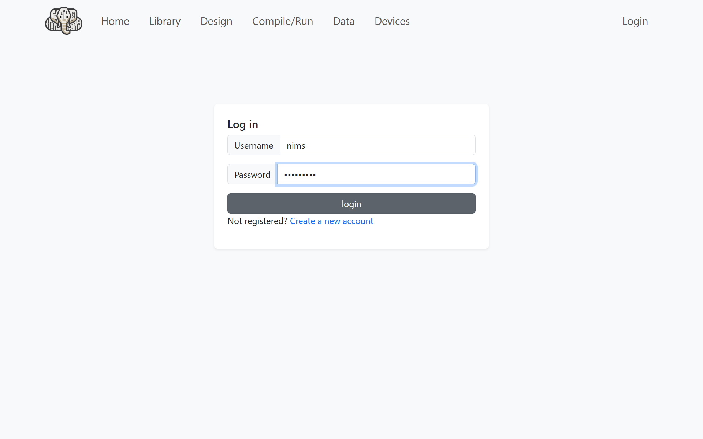
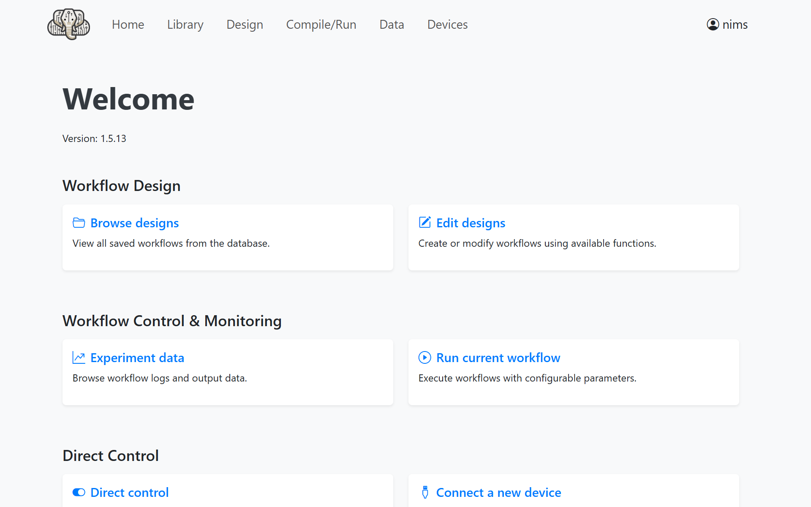

IvoryOSインターフェース
このページでは，物質Xの相図を作成する想定でIvoryOSインターフェースを使ったNIMOの使い方を説明します．
物質Xは以下のような相図を持ちます．
三重点 (0 ℃, 5000 Pa) を通る直線より下の領域は気体
直線よりも上の領域で0℃未満では固体，0℃以上では液体

インストール
IvoryOSを使う場合は追加のインストールが必要です．
pip install ivoryos
動作確認はNIMO v2.1.2，IvoryOS v1.5.13で行いました．
インターフェースの起動
エディターを起動して，以下のPythonプログラムを入力し main.py という名前で保存してください．
import ivoryos
# SDLクラスの定義
class SampleSDL:
def __init__(self):
# 相図パラメータの定義
self.t_triple = 0
self.p_triple = 5000
self.slope = 50
def get_phase(self, temperature: float, pressure: float) -> int:
"""
指定された温度・圧力に対応する相を求める
0: 固相, 1: 液相, 2: 気相
"""
boundary = self.slope * (temperature - self.t_triple) + self.p_triple
if pressure < boundary:
return 2
else:
if temperature < self.t_triple:
return 0
else:
return 1
if __name__ == "__main__":
# SDLクラスインスタンスの作成
sdl = SampleSDL()
# IvoryOSインターフェースの起動
ivoryos.run(__name__, port=8888)
保存したPythonプログラムを実行して，IvoryOSインターフェースを起動してください．
python main.py
ワークフローの設計
これを実行したまま，Webブラウザーで http://127.0.0.1:8888/ にアクセスすると，以下のようなログイン画面が開きます．
{kind=link}

Create a new account をクリックして，ユーザー名とパスワードを設定してください．

設定したユーザー名とパスワードを入力してログインしてください．
{kind=link}

ログインすると，次のようなメニュー画面が開きます．
{kind=link}

右上の Edit designs をクリックすると次のようなワークフロー編集画面が開きます．

Instruments の下の Sdl をクリックして，次のように入力します．
Temperature:
#temperaturePressure:
#pressureRun once per batch: チェックしない
Save value as:
objective

Add ボタンをクリックすると，ブロックが追加されます．

このようにブロックを組み合わせることでワークフローを設計できます．
実験計画の実行
ワークフローの設計が終わったら，Prepare Run ボタンをクリックして実験計画の設定画面を開きます．
以下のように数値を設定してください．
Optimizer Strategy:
nimotemperature:
-50(Min)，150(Max)，10(Step)pressure:
0(Min)，20000(Max)，1000(Step)Max Iterations:
40
その他の設定は変更する必要がありません．

次に Model Configuration を開いて，次のように設定してください．
Surrogate Model:
RENum Samples:
10Acquisition Function:
PDC
この設定では最初の10回はランダム探索を行い，その後はPDCアルゴリズムによる探索を行います．

実験の実行
Run Optimization ボタンをクリックすると，NIMOによる実験がスタートします．

少し待っていると実験が終了します．

Optimizer Plot を開き Refresh Plot をクリックすると作成された相図が表示されます．

Note
ランダム探索の結果によっては，表示される相図が異なる場合があります．
（発展）予備実験結果の入力
既に予備実験の結果がある場合は，実験計画設定画面の左上にある Data Source の Upload new data を有効にして，予備実験の結果を入力したCSVファイルをアップロードすることができます．
CSVの列名はワークフロー設計画面で入力した変数名と一致させる必要があります．
temperature,pressure,objective
-50,0,2
-50,20000,0
150,20000,1
既知の問題点
一度実験を行った画面で再度実験を実行して相図を表示するとIvoryOSが落ちることがあります．IvoryOSを再起動することで問題は解決するようですが，原因は調査中です．